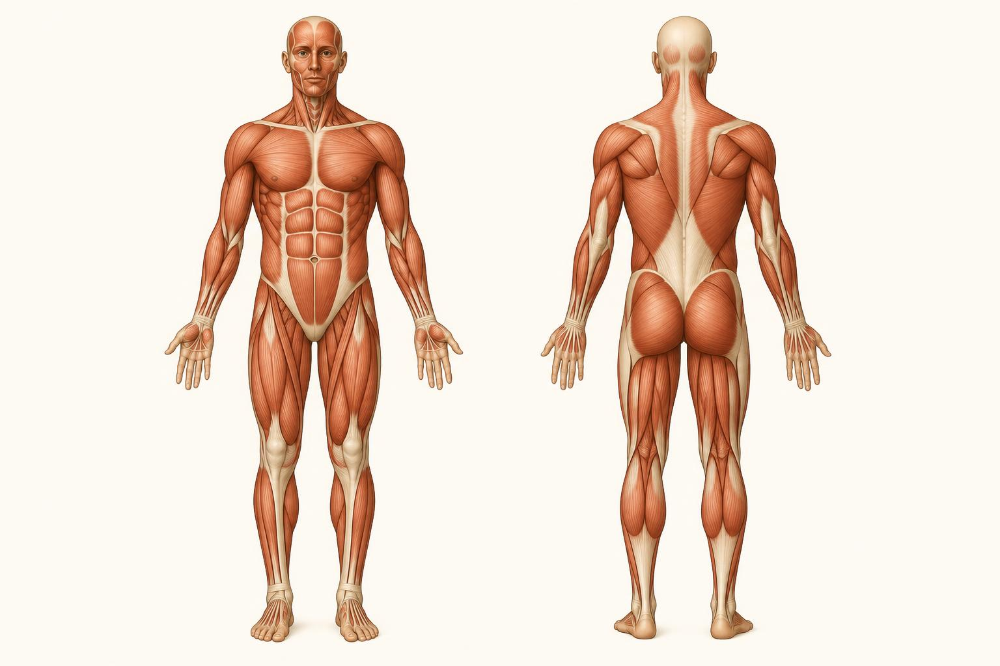
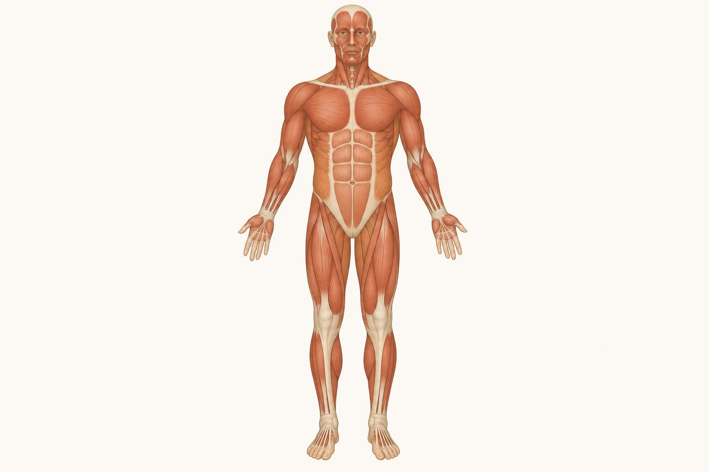
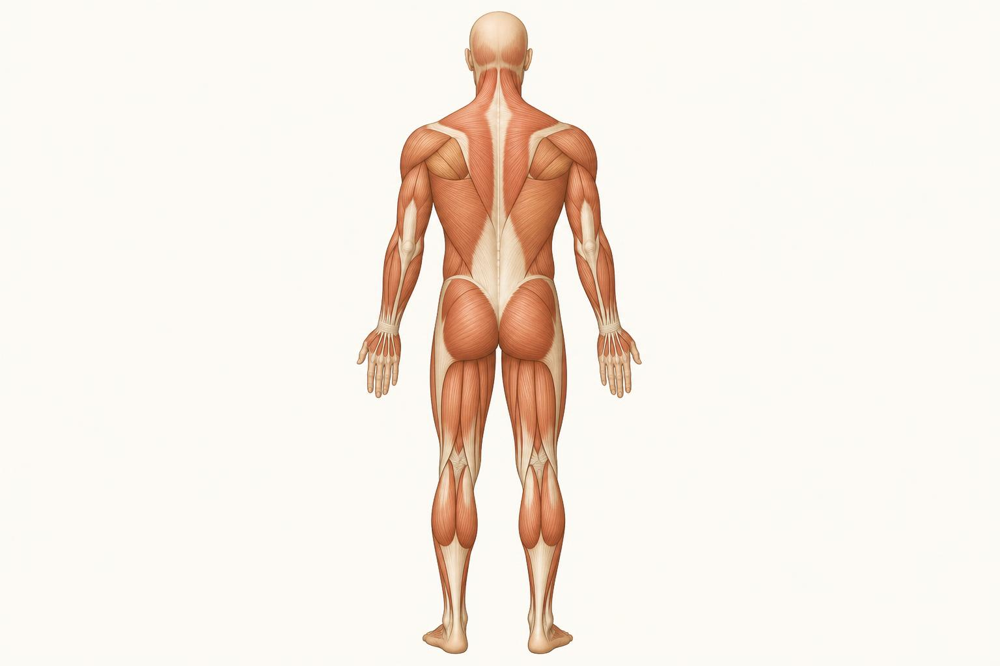

The Superficial Muscle Map
What you can see and palpate, front and back.
Chapter 1 gave you the reading system: origin, insertion, and the logic of pull. This chapter puts that system to work on the muscles you actually see and feel on a client every session, the superficial layer lying just under the skin. These are the muscles that show up in a mirror, that you can grab a handful of, and that give away posture and effort before a client says a word.
We will walk the body twice, front then back, in the order a trainer's eye naturally travels: head and shoulders, trunk, arms, then legs. For each muscle you get where it sits, what you can see or feel, what it does (reasoned out from its two ends the way you learned in Chapter 1), and one coaching note. Keep the agonist and antagonist idea close by, almost every muscle here has a clear partner on the opposite side of a joint, and pointing that pairing out is most of what makes this chapter useful.

- 1Sternocleidomastoid turns and tilts the head
- 2Deltoid caps the shoulder, raises the arm
- 3Pectoralis major chest, pushes and hugs across
- 4Biceps brachii flexes the elbow
- 5Forearm flexors grip and wrist
- 6Rectus abdominis the trunk flexor
- 7External oblique rotates and side-bends
- 8Quadriceps extends the knee
- 9Tibialis anterior lifts the foot
Front of the body
Start at the front, because it is the view a client sees of themselves every day, and the view you spend the most time facing during a session.
Head, neck, and shoulders
Sternocleidomastoid runs as a thick diagonal cord from just behind the ear down to the top of the sternum and collarbone, and stands out clearly on one side of the neck when you turn your head the other way. Origin at the sternum and clavicle, insertion at the mastoid process behind the ear, so it turns the face to the opposite side and tips the head, or flexes the neck forward when both sides work together. Clients who spend all day looking down at a phone often show short, tight sternocleidomastoids and a forward head posture, so cueing a tall neck is really asking this muscle to stop doing extra work it was never built for.
Anterior and medial deltoid form the rounded cap over the point of the shoulder, anterior fibers on the front of that cap and medial fibers on top and to the side. Origin along the collarbone and shoulder blade, insertion partway down the upper arm bone, so anterior fibers raise the arm forward and medial fibers lift it out to the side. A rounded, dominant anterior deltoid next to a flat chest is a quick visual flag for a client who presses often and pulls rarely.
Chest and trunk
Pectoralis major is the broad fan of muscle covering the upper chest, running from the sternum and collarbone out to the upper arm, its insertion. Contracting pulls the arm across the body and toward the midline, the job behind every press and fly. It is one half of the classic pushing pair, and a client who benches often but trains nothing for the upper back lets the pecs win the tug of war and pull the shoulders forward. Pair every push with a pull.
Serratus anterior shows up as finger-like slips low on the side of the ribcage, tucked just under the armpit and the edge of the shoulder blade. Lean on a wall with straight arms and push through your hands, and the slips pop into view. Origin on the upper ribs, insertion on the inner edge of the shoulder blade, pulling it forward around the ribcage, which is what lets you reach fully overhead. A shoulder blade that wings, sticking out during a push-up or plank, usually means a weak serratus anterior, and push-up plus drills, protracting hard at the top, target it directly.
Rectus abdominis is the central abdominal muscle running from the lower ribs to the pelvis, visible as the six pack when body fat is low and the muscle is trained. Origin on the pubic bone, insertion on the ribs and breastbone, so it pulls the ribcage down toward the pelvis, the crunch motion. It is a flexor more than a stabilizer, and for a client chasing a flatter midsection, breathing mechanics and total body fat usually matter more than extra crunches.
External oblique runs diagonally down the side of the abdomen, fibers angled the way your fingers point in your front pockets. Origin on the lower ribs, insertion on the pelvis and connective tissue at the midline, so one side alone rotates the trunk away from itself and side-bends toward itself. Rotational power in a throw, a swing, or a med ball slam runs largely through the obliques, and skipping rotational training leaves this group undertrained no matter how much direct ab work you do.
Several muscles here are really teams working under one name. Deltoid has anterior, medial, and posterior fibers that can act somewhat independently. Trapezius has upper, middle, and lower fibers pulling three different directions. Quadriceps is four separate muscles sharing one tendon. Do not let the singular name fool you into thinking these are one uniform block, a client can have a strong upper trapezius and a weak lower trapezius at the same time.
Arms, seen from the front
Biceps brachii is the muscle on the front of the upper arm, two heads joining into one visible belly. Origin on the shoulder blade, insertion on the forearm bone below the elbow, so shortening pulls the forearm up toward the shoulder and also helps turn the palm upward. It is the textbook agonist to the triceps, and a program heavy on curls but light on pressing or extension work eventually shows up as a front-to-back strength gap in the arm.
Forearm flexors bulk out the palm side of the forearm from just below the elbow to the wrist. Make a fist and you can feel the group tighten. Origin on the inside of the elbow, insertion spread across the wrist and fingers, bending the wrist and curling the fingers, most of what grip strength actually is. Grip often fails before the target muscle on heavy pulling work, and while straps protect the lift, direct forearm flexor work closes a genuine grip weakness.
Legs, seen from the front
Quadriceps group (rectus femoris, vastus lateralis, vastus medialis). Rectus femoris runs straight down the center of the thigh, vastus lateralis bulges on the outside, vastus medialis forms the teardrop shape just above the inner knee. All three, plus a fourth deeper muscle called vastus intermedius, share an insertion on the shin bone by way of the patellar tendon and straighten the knee, while rectus femoris also crosses the hip and helps lift it. Quads and hamstrings are the other headline agonist and antagonist pair in the lower body, and quad-dominant training without matching hamstring and glute work is a common route to knee trouble.
Tibialis anterior runs down the outer edge of the shin bone, standing out clearly when you pull your toes up toward your knee. Origin on the upper shin bone, insertion on the foot, so it lifts the foot and toes and controls how the foot lowers after a heel strike. The burning shin pain often called shin splints frequently traces back to an overworked or undertrained tibialis anterior, and simple toe raises are an easy fix to build in.

- 1Trapezius moves and steadies the shoulder blade
- 2Posterior deltoid draws the arm back
- 3Triceps brachii extends the elbow
- 4Latissimus dorsi pulls the arm down and back
- 5Erector spinae extends the spine
- 6Gluteus medius steadies the pelvis
- 7Gluteus maximus extends the hip
- 8Hamstrings bend the knee, extend the hip
- 9Gastrocnemius points the foot
Back of the body
Flip a client around and a whole second set of muscles becomes the story, mostly the ones responsible for pulling, standing tall, and extending the hips and spine.
Upper back and neck
Trapezius is one large, kite-shaped sheet from the base of the skull down to the mid-back and out to both shoulder blades, best understood as three sections. Upper fibers shrug the shoulder blade up, middle fibers pull it back toward the spine, and lower fibers pull it down. Most desk-bound clients over-rely on the upper fibers, chronic shrugging and neck tension, while under-using the middle and lower fibers, and rows and face pulls that target retraction and depression correct that balance.
Rhomboids sit directly beneath the middle trapezius, between the shoulder blades. You cannot see them separately from the trapezius on the surface, but you can feel the combined bulk contract when a client squeezes the shoulder blades together. Origin on the spine, insertion on the inner edge of the shoulder blade, pulling it back and slightly up as a close synergist to the middle trapezius. Coaches often lump them into mid-back rows, which is fine, just remember the trapezius is not the only thing firing.
Lower back and lats
Latissimus dorsi is the broad, wing-shaped muscle covering most of the lower and side back, tapering up into the armpit, the muscle behind a well-developed back's V-shape. Origin along the lower spine and pelvis, insertion on the upper arm bone in the armpit, pulling the arm down and back toward the body, the driving motion in every pull-up and lat pulldown. Lats also help stabilize the lower back, so a weak lat can quietly show up as low back strain on heavy lifts, not just a small pulldown number.
Erector spinae is the thick, rope-like mass running up either side of the spine from the pelvis to the base of the skull, standing out clearly when someone arches the back or holds a heavy deadlift. It extends the back, straightening it from a rounded or bent position, and is the direct antagonist to rectus abdominis. Deadlifts, back extensions, and good mornings load it directly, and a weak erector spinae relative to a strong rectus abdominis is a common setup for a rounded-back lifting fault.
Reach both arms out to the sides, then pull your elbows down and back as if tucking your shoulder blades into your back pockets, the same motion as the top of a lat pulldown. Press your fingers into the side of your back, just below the armpit, while you do it. You will feel the latissimus dorsi bunch up thick under your fingers as it shortens, and release as your arms float back up, the whole lat pulldown exercise happening in miniature.
Arms, seen from the back
Posterior deltoid is the back portion of the shoulder cap, behind the medial fibers. Sharing the deltoid's origin region but pulling from behind, it draws the arm backward and out to the side in the horizontal plane, the finish position of a rear delt fly. It is usually the most undertrained third of the deltoid: anterior fibers get plenty of work from pressing, but posterior fibers need direct pulling and fly work or they lag behind.
Triceps brachii covers the back of the upper arm, three heads blending into one horseshoe-shaped mass above the elbow. Origin on the shoulder blade and upper arm bone, insertion on the point of the elbow, so shortening straightens the elbow, the opposite job to the biceps. Because one head also crosses the shoulder, both overhead work and straight-arm pressing train it, and a client stuck on bench press often needs more direct triceps work, not more bench.
A quick front-and-back visual scan, done in under a minute, tells you where a client's imbalances probably are before you ever load a bar. Rounded shoulders and a flat upper back point to a pec and anterior deltoid dominant client who needs pulling work. An anterior pelvic tilt with a flat backside points to underactive glutes and overactive hip flexors. You are not diagnosing anything medical, just reading visible muscle balance the way you read a single muscle in Chapter 1.
Hips and legs, seen from the back
Gluteus maximus is the largest muscle in the body, forming the bulk of the buttock. Origin on the back of the pelvis, insertion on the upper thigh bone, so it extends the hip and drives the thigh backward, the finishing motion of a squat, deadlift, or sprint stride. It is the prime mover for hip extension and the direct antagonist to hip flexors like the psoas. Clients who sit most of the day often present with underactive glutes and tight hip flexors, and a hard glute squeeze at lockout is one of the fastest ways to wake it back up.
Gluteus medius sits higher and more to the side than gluteus maximus, on the outer hip, partly covered by it. Origin on the outer pelvis, insertion on the top of the thigh bone, so it abducts the hip and, just as importantly, stabilizes the pelvis on one leg. A weak gluteus medius lets the opposite hip drop during walking or single-leg work, a pattern easy to spot from behind, and side-lying leg raises and lateral band walks target it directly.
Hamstring group (biceps femoris on the outer thigh, semitendinosus and semimembranosus on the inner thigh) runs down the back of the thigh from the sit bone to below the knee. All three share an origin at the ischial tuberosity and insert below the knee, so they do two jobs, extending the hip and flexing the knee. Because they cross two joints, hamstrings are easy to undertrain with machines alone, and hip hinge patterns like a Romanian deadlift, which stretch the hamstring across both joints at once, train it more completely than a leg curl by itself.
Gastrocnemius is the two-headed muscle forming the visible diamond shape of the calf. Origin above the knee on the thigh bone, insertion on the heel by way of the Achilles tendon, so it points the foot down and, because it crosses the knee too, assists knee flexion. That is why calf raises are done both standing, knee straight, and seated, knee bent, which slackens the gastrocnemius so the soleus underneath takes over. Skip that distinction and you train only half the calf.
The limbs in the mirror
Look back over both maps and a pattern jumps out. Pecs on the front are answered by mid and lower trapezius and rhomboids on the back. Biceps on the front of the arm are answered by triceps on the back. Quadriceps on the front of the thigh are answered by hamstrings and glutes on the back. Rectus abdominis on the front of the trunk is answered by erector spinae on the back. This is not a coincidence, every joint that can move in two directions needs a muscle pulling each way, and a body trained evenly on both sides of that ledger moves better and breaks down less often. Scanning for a front muscle that looks dominant next to a flat or weak partner on the back, or the reverse, is one of the fastest, lowest-tech assessments available to you, and it needs nothing more than the same origin-and-insertion logic from Chapter 1 applied twice, once to each side of the joint.
The takeaway
You now have a working map of the muscles you can see and feel on nearly every client, front and back. None of this required memorizing a textbook list, you built each answer from the same two ends and the same one question from Chapter 1: when this shortens, what gets pulled toward what? The next chapter goes one layer deeper, into the skeleton itself and the bony landmarks you find by hand, the scaffolding all of these muscles are pulling against.